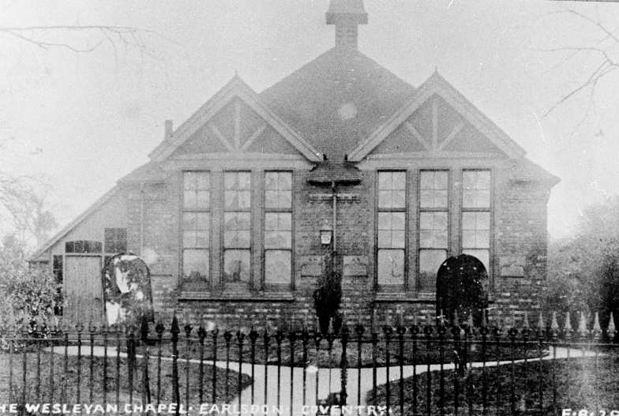

Methodist Chapel (now the Criterion Theatre) The first Methodist meeting place in Earlsdon was the old weaving shed, which was also used by the Sunday School. By the 1881 Census there were about 80 people attending these services. Also by this time the local congregation had raised £106 5s 9d. By the next year the organising Trust headed by Robert Waddington, decided that they had enough money to get started. He bought a plot of land on the opposite side of Cromwell Street and appointed a young architect, William Tomlinson, then living in Moor Street, to design a suitable building for them. It took another year of fundraising before they felt able to advertise for tenders from builders and after receiving six, chose Mr Beecham of Allesley for £800, £300 more than they had anticipated a year before. Although a small amount to us today, then the average mans wage was about 20 or 30 shillings a week at most, it was a huge amount for them to take on, but they were determined to do it. On Easter Tuesday, 15 April 1884, the stone laying ceremony took place and in the actual words of one of the Trustees: ' It was a gloriously fine day. The village was gay with flags and bunting and the school children with the school banners floating above their heads were assembled on a raised platform. A large company from the City of Coventry and the neighbourhood gathered together for this redletter day in the history of Earlsdon.' Coventry MPs Messrs Eaton and Wills were present, laid stones, gave speeches and donations, after which tea was served in a marquee on the school grounds, when there were more speeches, hymns, prayers and of course a collecting of funds, the total amount coming to £122 6s 0d. Now the serious business of building could begin and everyone watched with interest as the chapel quickly took shape. Sadly there was no great celebration as the congregation moved in for their first service. Due to a gas explosion which badly damaged the weaving shed, the new building was bought quickly into use, before it was completely ready, the congregation thanking God that it was at least habitable and they were able to continue their services without a break. For the next 39 years it served as Earlsdon's Methodist Church until being replaced by the new splendid building on the corner of Albany Road and Earlsdon Avenue South in 1923.
The old chapel continued in use, functioning as a Sunday School for the next 76 years, but also serving the community as a whole. It was a venue for bazaars, fetes, concerts, meetings of all sorts, a sports dressing room, a youth club, centre for scouts and guides, even during the last war serving as an army base, and later becoming an annexe for the day school, a never ending list of activities. When in 1960 it was finally vacated by the Methodists and was finally put up for sale, happily for the community it was bought by the extremely successful amateur Criterion Theatre Company. It thus continues to serve not only the Earlsdon community but a wider audience. |